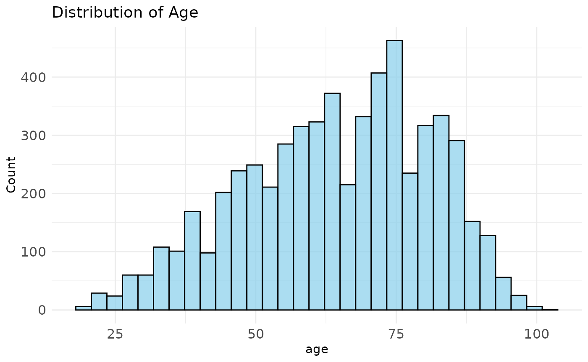
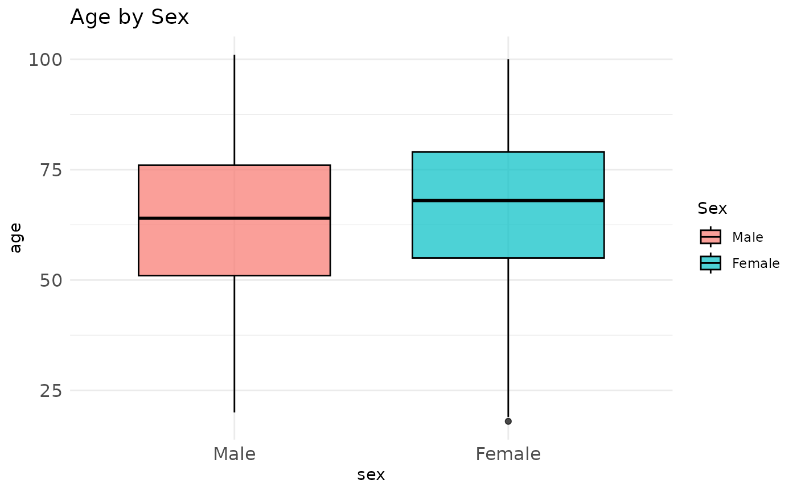
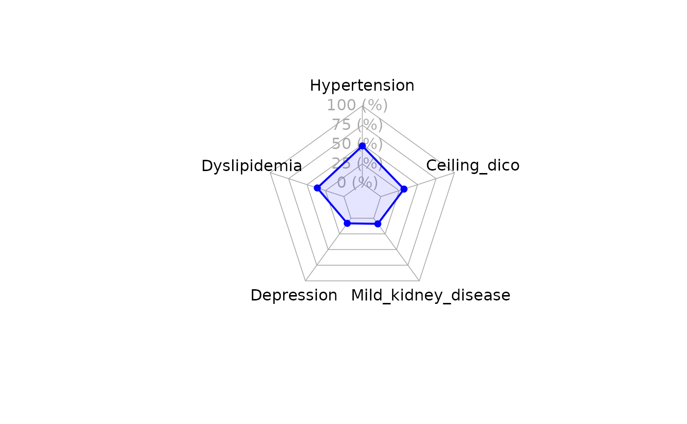

Introduction
The DIVINE package offers a collection of curated datasets along with convenient data management functions. These sample datasets (e.g., patient demographics, symptoms, treatments, and outcomes) are included for demonstration purposes, enabling users to practice and test various data manipulation workflows. Using DIVINE functions, you can inspect, clean, merge, summarize, visualize, and export data efficiently. In this vignette, we illustrate common tasks and functions provided by DIVINE to help streamline your data analysis process.
Installation and Loading
To install DIVINE, use the standard CRAN or GitHub approach:
- CRAN:
install.packages("DIVINE")- GitHub (development version):
# install.packages("devtools")
devtools::install_github("bruigtp/DIVINE")
pak::pak("bruigtp/DIVINE") # AlternativeOnce installed, load the package:
This makes all datasets and functions available in your R session.
Available Datasets
Use the data() function to list available sample
datasets. For example:
data(package = "DIVINE")The DIVINE package includes the following datasets (each represents a data frame):
analyticscomorbiditiescomplicationsconcomitant_medicationdemographicend_followupicuinhosp_antibioticsinhosp_antiviralsinhosp_other_treatmentsscoressymptomsvital_signsvaccine
To obtain more information for a dataset:
?demographicLoad any dataset into your R environment using
data("dataset_name"). For example, to load and preview the
demographic dataset:
data("demographic")
head(demographic)
#> # A tibble: 6 × 8
#> record_id covid_wave center sex age smoker alcohol residence_center
#> <int> <fct> <fct> <fct> <dbl> <fct> <fct> <fct>
#> 1 1 Wave 2 Hospital C Female 84 No No No
#> 2 2 Wave 2 Hospital A Female 33 No No No
#> 3 3 Wave 3 Hospital A Male 64 Ex-smok… Yes No
#> 4 4 Wave 3 Hospital A Female 65 Ex-smok… No No
#> 5 5 Wave 2 Hospital C Male 49 No No No
#> 6 6 Wave 1 Hospital C Female 40 No No NoWorkflow Examples
The following examples demonstrate a typical data management workflow using DIVINE functions. Each section shows how to use a function step-by-step with example output.
1. Inspecting Data with data_overview()
Start by understanding your dataset’s shape, variable types, and
missingness with data_overview(). The function returns a
named list containing the dataset dimensions, variable types,
missing-value counts, and a small preview of the data (by default the
first 6 rows).
# Overview of your data frame
ov <- data_overview(demographic)
# Print the entire overview
ov
#> $dimensions
#> [1] 5813 8
#>
#> $variable_types
#> record_id covid_wave center sex
#> "integer" "factor" "factor" "factor"
#> age smoker alcohol residence_center
#> "numeric" "factor" "factor" "factor"
#>
#> $missing_values
#> record_id covid_wave center sex
#> 0 0 0 0
#> age smoker alcohol residence_center
#> 0 0 0 0
#>
#> $preview
#> # A tibble: 6 × 8
#> record_id covid_wave center sex age smoker alcohol residence_center
#> <int> <fct> <fct> <fct> <dbl> <fct> <fct> <fct>
#> 1 1 Wave 2 Hospital C Female 84 No No No
#> 2 2 Wave 2 Hospital A Female 33 No No No
#> 3 3 Wave 3 Hospital A Male 64 Ex-smok… Yes No
#> 4 4 Wave 3 Hospital A Female 65 Ex-smok… No No
#> 5 5 Wave 2 Hospital C Male 49 No No No
#> 6 6 Wave 1 Hospital C Female 40 No No NoYou can also access each component individually:
# Each of the elements
ov$dimensions # number of rows and columns
#> [1] 5813 8
ov$variable_types # data types of each variable
#> record_id covid_wave center sex
#> "integer" "factor" "factor" "factor"
#> age smoker alcohol residence_center
#> "numeric" "factor" "factor" "factor"
ov$missing_values # count of missing values per column
#> record_id covid_wave center sex
#> 0 0 0 0
#> age smoker alcohol residence_center
#> 0 0 0 0
ov$preview # a small preview of the data
#> # A tibble: 6 × 8
#> record_id covid_wave center sex age smoker alcohol residence_center
#> <int> <fct> <fct> <fct> <dbl> <fct> <fct> <fct>
#> 1 1 Wave 2 Hospital C Female 84 No No No
#> 2 2 Wave 2 Hospital A Female 33 No No No
#> 3 3 Wave 3 Hospital A Male 64 Ex-smok… Yes No
#> 4 4 Wave 3 Hospital A Female 65 Ex-smok… No No
#> 5 5 Wave 2 Hospital C Male 49 No No No
#> 6 6 Wave 1 Hospital C Female 40 No No NoThis helps you quickly assess the dataset before any processing.
2. Handling Missing Values with impute_missing()
The impute_missing() function lets you replace missing
values using a specific strategy. You provide a named list of formulas
(<selector> ~ <strategy>), where
<selector> can be any tidyselect expression (e.g. a
column name, starts_with(), or
where(is.numeric)) and <strategy> one of
the following strategies:
“mean” or “median” (numeric columns only)
“mode” (character/factor columns only)
a numeric constant (for numeric columns)
a character constant (for character/factor columns)
You can also drop rows that are entirely NA by setting
all_na_rm = TRUE.
# 1) Default: replace all numeric NAs with column means
cleaned_default <- impute_missing(icu)
# 2) Single column strategies:
# - Mean for vent_mec_start_days
# - Zero for icu_enter_days
cleaned_mix <- impute_missing(
icu,
method = list(
vent_mec_start_days ~ "mean",
icu_enter_days ~ 0
)
)
# 3) Multiple columns at once:
# - Medians for any column ending in "_days"
cleaned_days_median <- impute_missing(
icu,
method = list(starts_with(".*_days$") ~ "median")
)
# 4) Factor/character imputation:
# - Fill gender with its most common level
# - Fill status with "Unknown"
cleaned_char <- impute_missing(
icu,
method = list(
covid_wave ~ "mode",
icu ~ "Unknown"
)
)
# 5) Drop all-NA rows first, then impute numeric means
cleaned_no_empty <- impute_missing(
icu,
method = list(where(is.numeric) ~ "mean"),
drop_all_na = TRUE
)
# ▶ message: Removed X rows where all values were NAAfter running impute_missing(), the returned dataset
will have missing values replaced in the columns you specified according
to your chosen strategies. The overall dataset structure (column names
and types) is preserved where possible; only the number of rows will
change if you set drop_all_na = TRUE.
⚠️ Caution: Single imputation methods may introduce bias or underestimate variability in your data. For more robust handling of missing data, consider multiple imputation approaches, such as those implemented in the
micepackage.
3. Merging Multiple Tables with multi_join()
When working with related tables, multi_join() combines
several data frames into a single table by a common key. Choose the join
behavior with join_type = "left", "inner",
"right", or "full" to control which rows are
kept. For example, suppose you have demographic, vital signs, and scores
tables all sharing the default key variables of the package
(record_id, covid_wave,
center):
data("vital_signs")
data("scores")
joined <- multi_join(
list(demographic, vital_signs, scores),
key = c("record_id", "covid_wave", "center"),
join_type = "left"
)This creates one combined data frame joined that
includes all rows from demographic and matches information
from vital_signs and scores by
record_id. Use join_type to decide whether
unmatched rows from one or more tables should be retained.
4. Creating Summary Tables with stats_table()
Use stats_table() to generate summary tables (leveraging
the gtsummary package) for one or more variables,
optionally stratified by a grouping variable. Use the
statistic_type argument to select the summary:
“mean_sd” (show
mean (SD)for numeric variables)“median_iqr” (show
median [Q1; Q3])“both” (include both
mean (SD)andmedian [Q1; Q3]where applicable)
# Mean (SD) by group (e.g., by gender or cohort)
tbl1 <- stats_table(
demographic,
vars = c("age", "smoker", "alcohol"),
by = "sex",
statistic_type = "mean_sd",
pvalue = TRUE
)
# Median [Q1; Q3] for all observations (no grouping)
tbl2 <- stats_table(
demographic,
statistic_type = "median_iqr"
)
# Both mean (SD) and median [IQR] combined
tbl3 <- stats_table(
demographic,
statistic_type = "both"
)Each tbl object is a gtsummary-style
table that you can print, refine or export to reports. Set
pvalue = TRUE to add p-values for group comparisons, and
consult the function documentation for options to format labels and
missing-value displays.
5. Visualizing Data with multi_plot()
Create common plot types quickly with multi_plot(). It
supports histograms, density plots, boxplots, barplots, and spider
(radar) charts. For instance:
# Histogram of age
multi_plot(
demographic,
x = "age",
plot_type = "histogram",
fill_color = "skyblue",
title = "Distribution of Age"
)
# Boxplot of age by sex
multi_plot(
demographic,
x = "sex",
y = "age",
plot_type = "boxplot",
group = "sex",
title = "Age by Sex"
)
# Spider plot of numeric variables (e.g., compare age, weight, height distributions)
multi_plot(
comorbidities,
radar = c("hypertension", "dyslipidemia", "depression", "mild_kidney_disease", "dm"),
radar_labels = stringr::str_to_sentence(c("hypertension", "dyslipidemia", "depression", "mild_kidney_disease", "dm")),
radar_color = "blue",
radar_ref_lev = "Yes",
plot_type = "spider"
)
Each call generates a plot (using ggplot2 under the hood). Customize titles, colors, and variables as needed for your data.
6. Exporting Data with export_data()
Finally, use export_data() to save your processed data
to disk in various formats. Supported formats include CSV, XLSX, RDS,
Rdata, SPSS, Stata, and SAS:
# Export cleaned data to CSV
export_data(cleaned_default, format = "csv", path = "cleaned_demographic.csv")
# Export joined data to Excel
export_data(joined, format = "xlsx", path = "joined_data.xlsx")Specify the path including filename and extension; the
function will write the file accordingly. You can also use
format = "rds" (R), "Rdata" (R),
"sav" (SPSS), "dta" (Stata), or
"sas7bdat" (SAS) as needed.
Further Resources
Package Documentation: View the reference manual for detailed function descriptions (e.g., via
help(package = "DIVINE")or the CRAN/GitHub repository documentation).In-R Help: Use
?DIVINE,?data_overview,?impute_missing, etc., to access function-specific help pages.